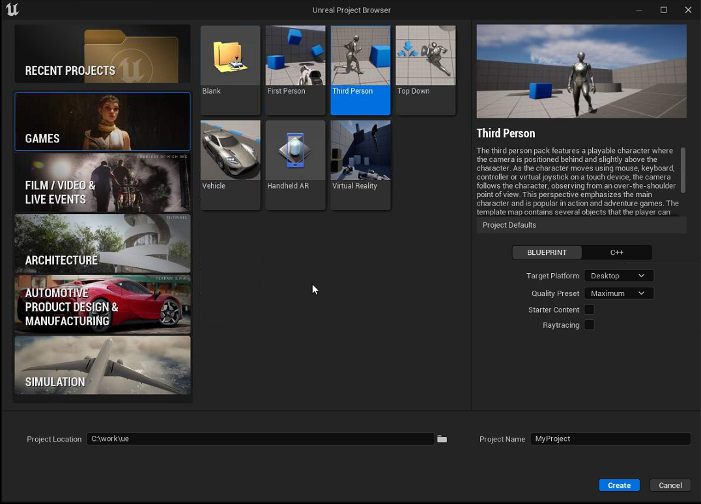
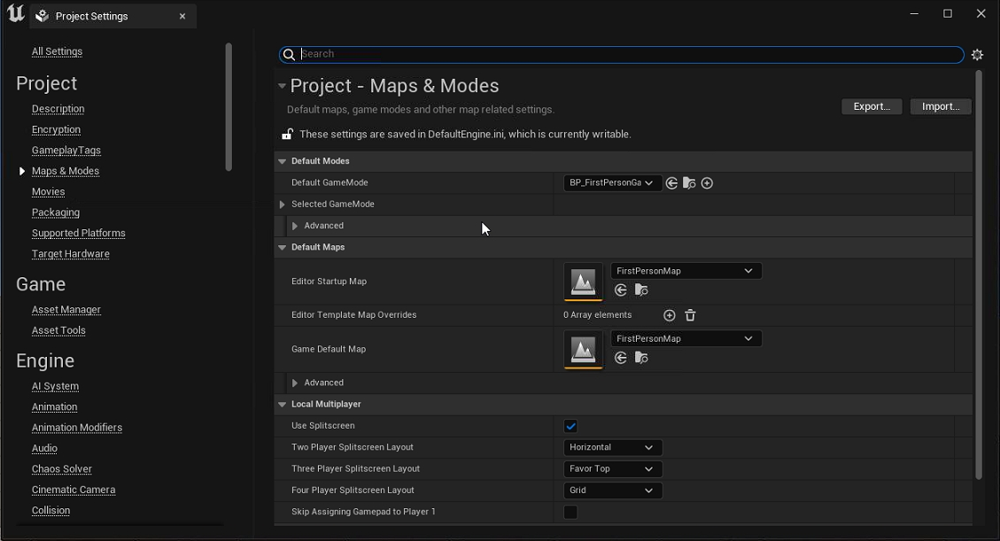
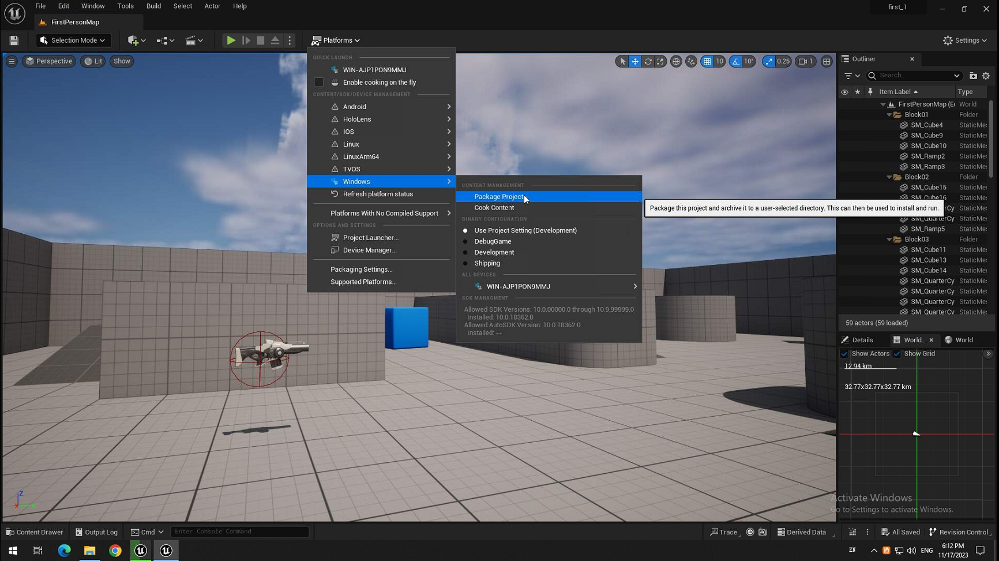
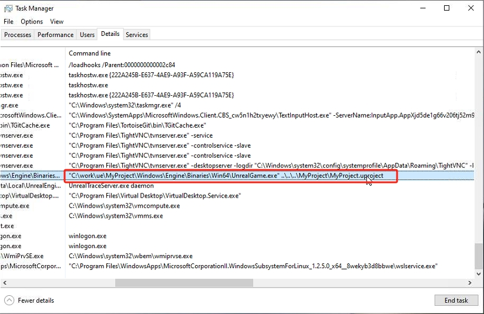
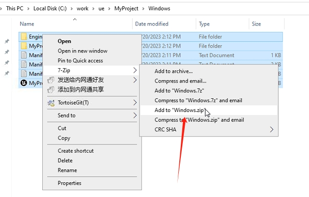
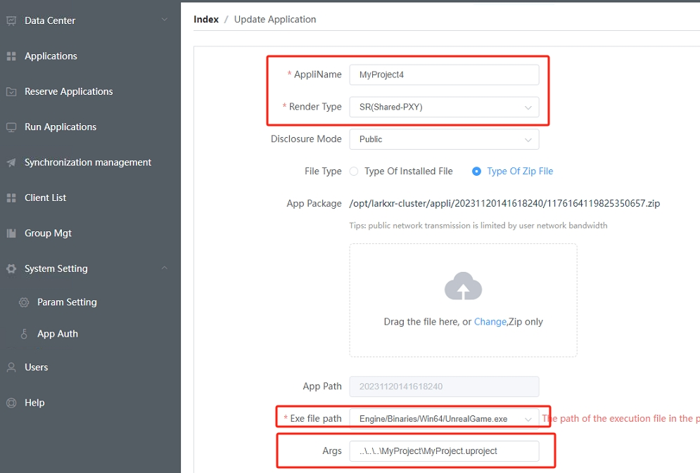
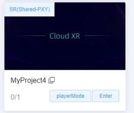

Quick START - Unreal
- Create project.

- Config and Pacakge to widnows


- Check running and get command line param.
..\..\..\MyProject\MyProject.uproject

- Package to zip file

- Upload zip file to LarkXR


- Setup cloud app info
note: Args set to
..\..\..\MyProject\MyProject.uproject

- Enter cloud app from browser.
